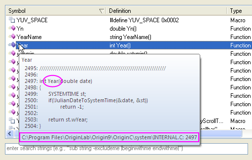
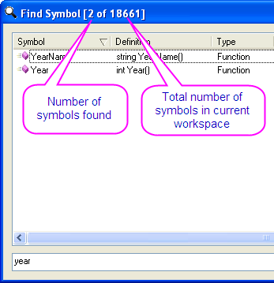

Right-click on the symbol list to display a shortcut menu with useful commands:
Code Builder provides a tool called the Find Symbols dialog to quickly open one or multiple wanted symbols by specifying certain conditions. To open this dialog, you can click Tools: Find Symbols on the menu bar or press SHIFT + ALT + S from keyboard.
The Find Symbols dialog box lists all symbols in the current workspace including: macros, classes, member functions, and functions. To open one or multiple symbols in Text Editor, click on the symbol (press CTRL or SHIFT for multiple selection) in the list and click OK or press ENTER. You can also double click on a symbol to open a single file.
The Find Symbols dialog allows you to sort the symbols by name, definition, type, and file. Upon clicking on the Symbol tab, a triangle will be displayed on the right of tab File, the symbols in the dialog box will then be listed in ascending alphabetical order. Click again, the triangle will point downwards, indicating the symbols will be listed in descending alphabetical order. It is similar to the tab Definition, Type, File.
|
Right-click on the symbol list to display a shortcut menu with useful commands: |
The Find Symbols dialog provides a Search Window tool to find the wanted symbols with specified conditions. You can type string in the search window to set one or multiple conditions, then the symbols that meet with those specified criteria will be listed in the dialog box. You can use the symbols listed in the following table to specify the condition. The symbols can be used alone or in combination.
| Symbol | Usage |
|---|---|
| - (minus) | Search the symbol whose definition excludes the string, e.g. "getobj -base" will find the symbols whose definitions include "getobj" and exclude "base". |
| | (vertical line) | character is placed behind the string it will find the symbol whose definition ends with that string, e.g. "|void name()|" will find the symbols whose definitions begin with "void" and end with "name()". |
There're two tips about file information in the Find Symbols dialog.

